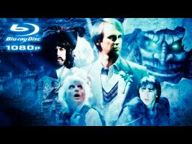
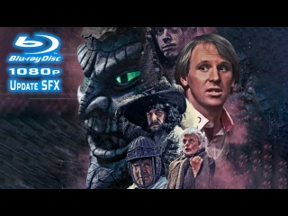
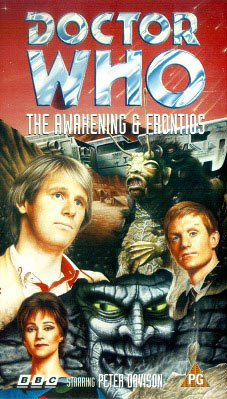
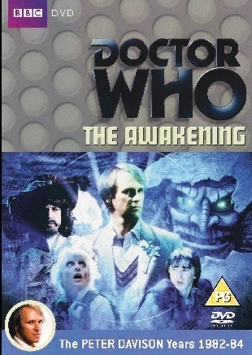
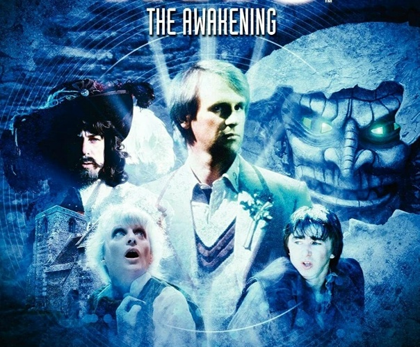
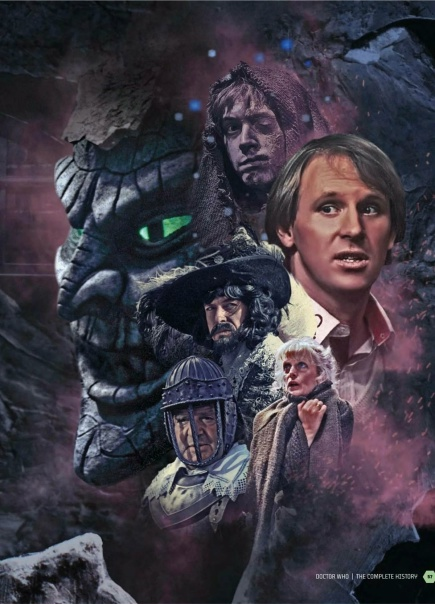
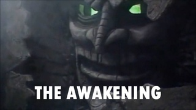

DVO [PARUSSKI] или Original [ENG] Субтитры: Русские и Английские |  |
|---|---|
с обновленными спецэффектами DVO [PARUSSKI] или Original [ENG] Субтитры: Русские и Английские |  |
The Awakening
Дата выхода: 19-20 января 1984
Формат: 2 эпизода по 25 мин.
| |
| Варианты озвучек: |
|---|
ТАРДИС прибывает в английскую деревушку Литл-Ходком, где Тиган собирается навестить деда. Но деревня одержима подготовкой к реконструкции гражданской войны — жители ведут себя агрессивно и странно. Выясняется, что под церковью спит Малус — древнее существо, питающееся агрессией, и местный землевладелец намеренно разжигает ненависть, чтобы пробудить его.
Двухсерийный формат снова продиктован бюджетом. Малус был создан по эскизу, который художник Майкл Хоффман нарисовал ещё для «Кинды» — но тогда не использовали. А генерал Вулворд, местный фанатик, — прямая отсылка к Оливеру Кромвелю, который реально воевал в этом регионе.
 VHS - март 1997 |   DVD+Boxset - 12 июля 2011 |  Blu-ray - 16 марта 2026 * Версия в нашей группе |
|---|


